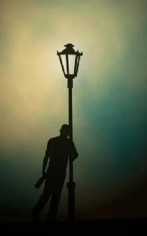
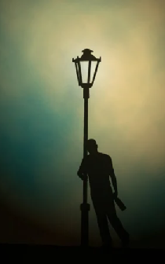

3 Da l' nemam, djanum,
N'ai-je pas, ma mère
(Dvanaesta Rukovet - 12ème guirlande :03:29 - 05:14)

Vasilja Radojčić (1936-2011)
|
|
|
|
|
 |
Version Mokranjac Version Vasilja Radojčić |
 |
NOTES
|
[1] Музичка наука Мокрањчeва и знање анонимног барда у служби исте ствари: Да се осуди недостојна судбина резервисана за поједине жене, „лоше удатe женe“, као што је ова, удата за пијаницy. Зар леп глас Василијe Радојчића не пребацује вагу у корист народног стваралаштва? [2] Провео сам неколико година проучавајући древне песме Доње Бретање на келтском језику. Упадљива ми је сличност тема овог репертоара са онима на Балкану. Нисам једини: ова чињеница није промакла пажњу двојице бретонских музичара, Ерика Маршанда и Тијерија Робена који тумаче, између осталог, бретонску песму „лоше удатe женe“ користећи кодове и процесе оријенталне музике: Ar boulom kozh (трећа мелодија). |
[1] La science musicale de Mokranjac et le savoir-faire d'un barde anonyme au service d'une même cause: Dénoncer le sort indigne réservé à certaines femmes, les "maumariées", telles que celle-ci, mariée à un pillier de cabaret. La belle voix de Vasilija Radojčić ne fait-elle pas pencher le fléau de la balance en faveur de l'art populaire? [2] J'ai passé plusieurs années à étudier les chants anciens de Basse-Bretagne en langue celtique. Je trouve frappante la similitude des thèmes de ce répertoire avec ceux que l'on rencontre dans les Balkans. Je ne suis pas le seul: ce fait n'a pas échappé à deux musiciens bretons, Erik Marchand et Thierry Robin qui interprètent, entre autre, un chant breton de "maumariée" en utilisant les codes et les procédés de la musique orientale: Ar boulom kozh (3ème mélodie) |